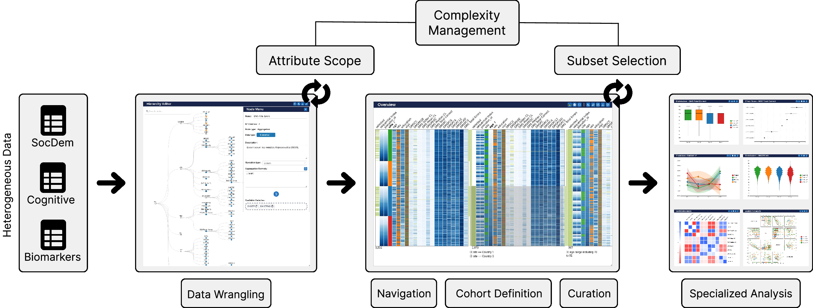

VIANNA
Interactive Visual Analytics for Longitudinal Neuropsychological Data
Interactive Visual Analytics for Longitudinal Neuropsychological Data

Modular architecture of VIANNA. The system follows a coordinated multiple-view design integrating hierarchical feature construction, overview-based cohort definition, and task-specific analytical components.
This work has received funding from the European Union's Horizon 2020 research and innovation programme under grant agreement No. 964220. This paper reflects only the authors' view and the Commission is not responsible for any use that may be made by the information it contains.
@article{vianna2026,
title={VIANNA: An Interactive Visual Analytics Framework for Exploratory
Analysis of Longitudinal Neuropsychological Assessment Data},
author={Jorge Acosta, Pablo Toharia},
journal={Computers in Biology and Medicine (Under Review)},
year={2026}
}